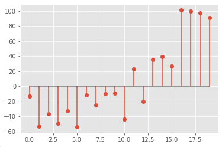

Prelab 5 - Resampling
Summary
When Cher’s song "Believe" hit shelves on October 22, 1998, music changed forever. Cher’s single sold 11 million copies worldwide, earned her a Grammy Award, and topped the charts in 23 countries. Auto-Tune is the algorithm behind the success of "Believe". It was created by an ECE Illinois PhD alum, Dr. Andy Hildebrand. He came up with the idea of using autocorrelation to do pitch correction while working as an oil engineer at Exxon. We will explore a variant of Auto-Tune in more detail in the lab.
In this prelab, we will try a naive pitch-shifting method: lowering the pitch by a factor of 3 and increasing the pitch by a factor of 2 using resampling.
Submit the assignment as a Jupyter Notebook to your respective TA.
Downloads
Part 1 - Upsample by 3x
Upsampling a signal by a factor of 3 means inserting 2 zeros between each sample. For example, we insert zeros in this 20-sample frame:

and get a 60-sample signal:
Assignment
Load the given test vector and upsample by 3x. Plot the FFT of the original signal and the zero-inserted signal.
- What is the relationship between the original signal's FFT and the upsampled signal's FFT?
- How do we preserve the original information without introducing aliasing?
Part 2 - Downsample by 2x
Downsampling a signal by a factor of 2 means removing every other sample. When played back at the same sampling rate, this results in a signal that sounds higher-pitched
Assignment
Load the given test vector and downsample by 2x. Plot the FFT of the original signal and the downsampled signal.
- What is the relationship between the original signal's FFT and the downsampled signal's FFT?
- How do we preserve the original information without introducing aliasing?
Part 3 - Playback
Parts 1 and 2 (along with a couple other components) can be chained together to implement a resampler of any ratio . To get some intuition for the output of a resampled signal, we will use SciPy's resampling function scipy.signal.resample_poly. This can be called with the following code:
from scipy import signal from scipy.io.wavfile import read from IPython.display import Audio Fs, data = read('test_audio.wav') data = data[:, 0] up_ratio = ?? down_ratio = ?? output = signal.resample_poly(data, up_ratio, down_ratio) Audio(output, rate=Fs)
Assignment
Try a few resampling ratios, including at least . What does the resulting audio sound like? Be specific in your response. How do the vocal characteristics of the singer change?